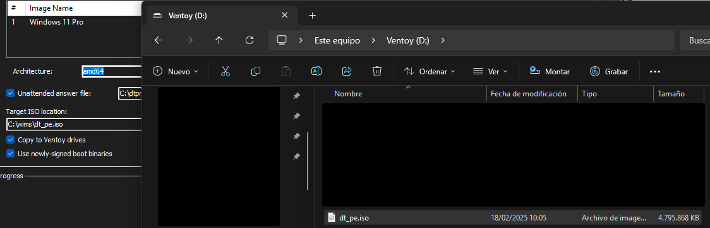
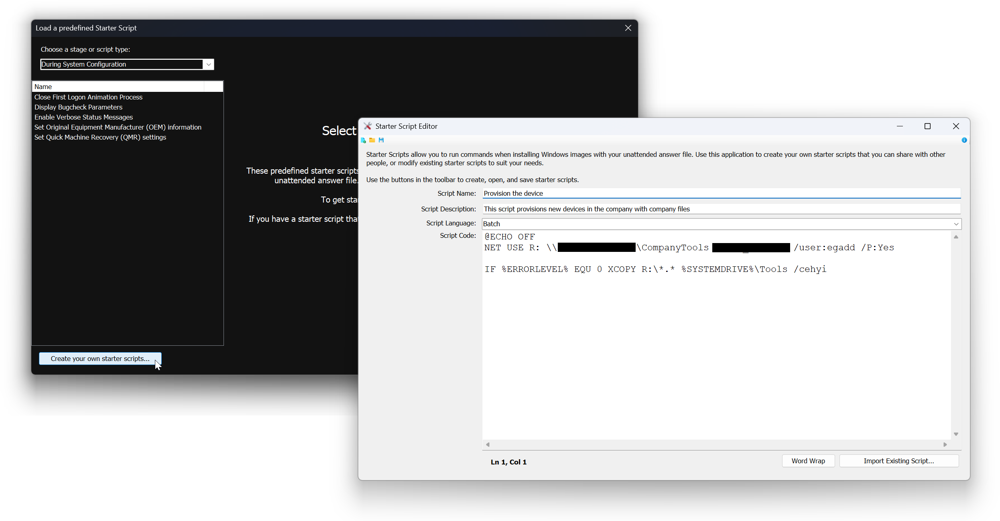
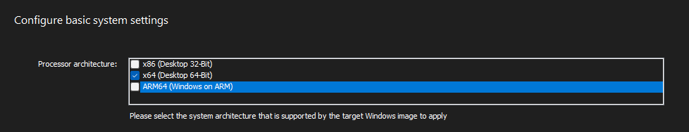

Release highlights
This new version of DISMTools comes with new features that enhance image management and servicing tasks. Here are some of its key changes.
If you want to take a look at everything that has changed though, check out the release notes page for more information.
Start installations from full operating environments, and more Preinstallation Environment goodies
DISMTools 0.6.1 features a new way to start the installation of your customized image with a technology called HotInstall. This installer configures the boot entries of your computer to automatically boot to the DISMTools Preinstallation Environment, from which you can perform image application and disk configuration.

The Preinstallation Environment Helper has also been improved, adding support for the latest Windows ADKs, the ability to create disc images with boot binaries signed with new certificates, and the ability to get more information about your Windows image:

The ISO creator lets you copy your disc images to Ventoy drives as well:

Learn more about the new ISO creation features
New features for your unattended answer files
The unattended answer file features now let you configure post-installation scripts in PowerShell. You can write your own code, or you can open an existing script.

You can also normalize the spacing of unattended answer files to make it consistent:

Your unattended answer files can also target multiple processor architectures. For example, you can create an answer file that works on regular computers and ARM-based Copilot+ PCs:

Learn more about the new unattended answer file features
Overall refinements
This release also focuses on refining existing tasks and functionality to improve the user experience. For example, more items have received translations, the program is more reliable, and components have been updated to their latest versions.
Thanks to the contributors
The following people have helped shape this version of DISMTools by reporting issues or suggesting new features or changes:
- Dretreyt for spotting issues with setting save functionality,
- arielsil for spotting issues with some background processes functions and some tasks,
- novice55 for spotting issues with background processes,
- webber3242 for spotting issues with project creation,
- Dede333 for helping spot WIMBoot issues with non-Windows 8.1 images, and
- InnerBrat for spotting folder attribute detection issues
If you want to appear in this list, you can report issues or suggestions in any channel you prefer (via the MDL forum thread, via the GitHub repository, or via any announcements on the DISMTools subreddit or on the Windows, Windows11 and Windows10 subreddits (as comments)) or submit new code changes (read the contribution guidelines for more information).